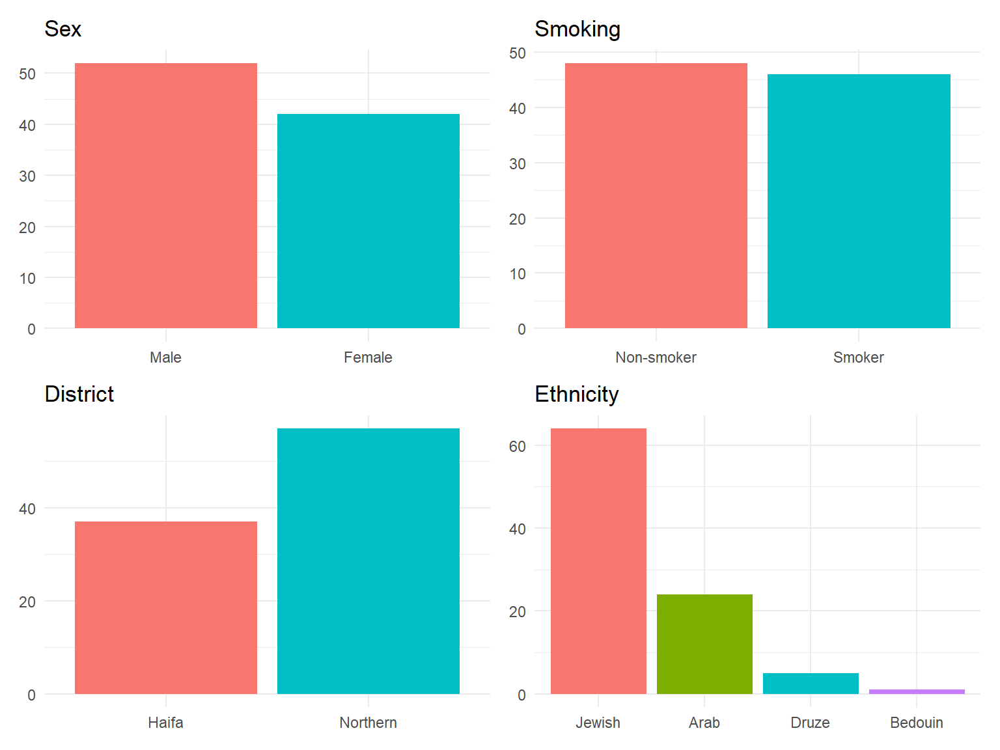
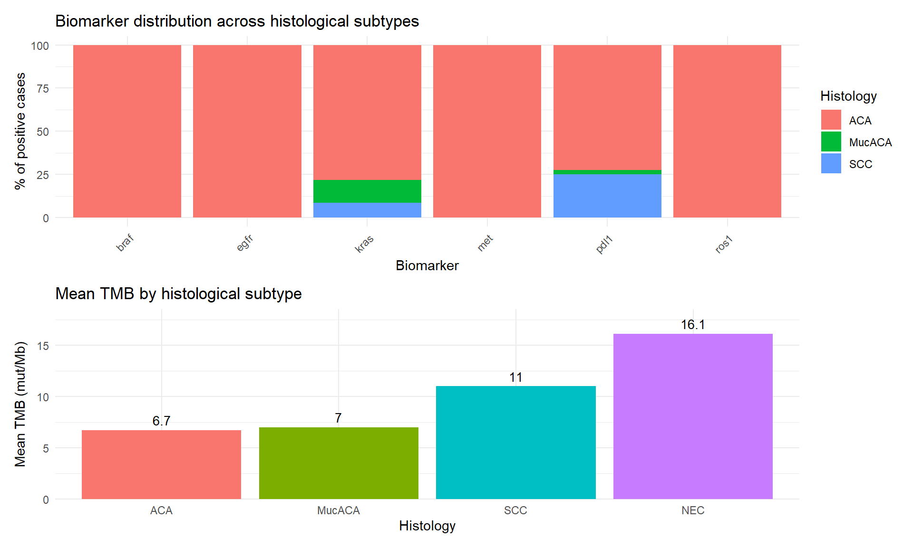
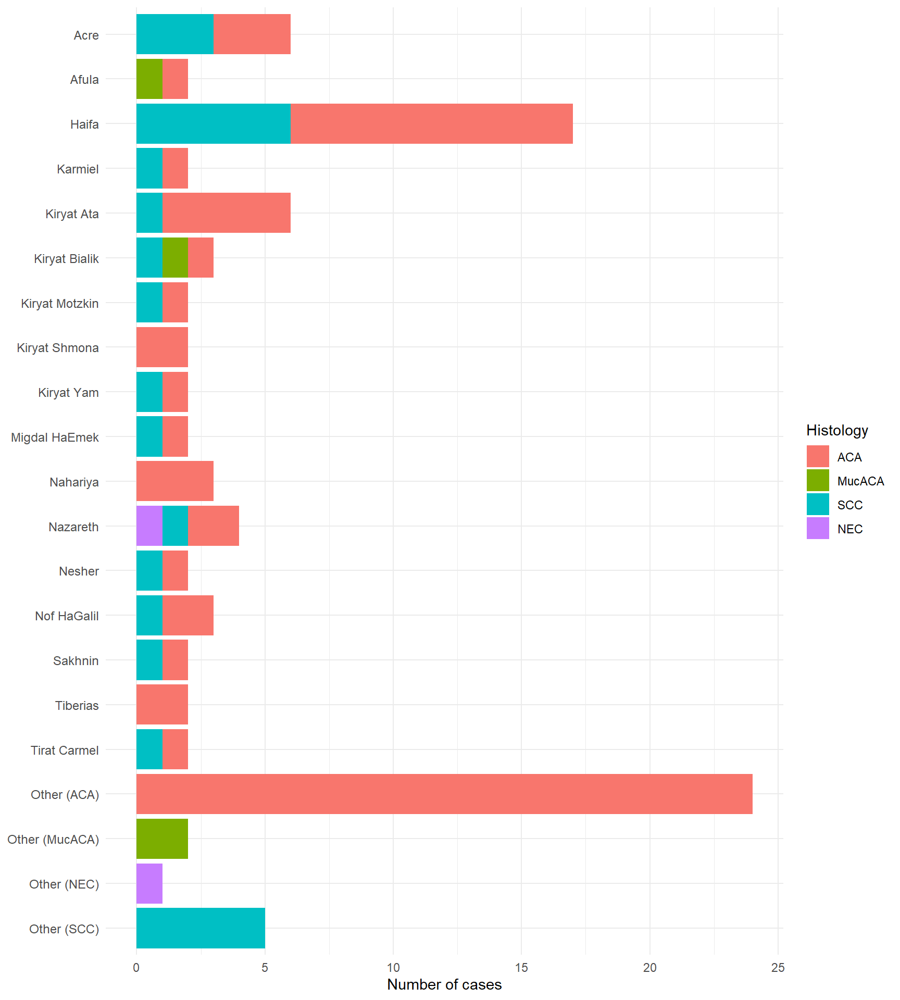
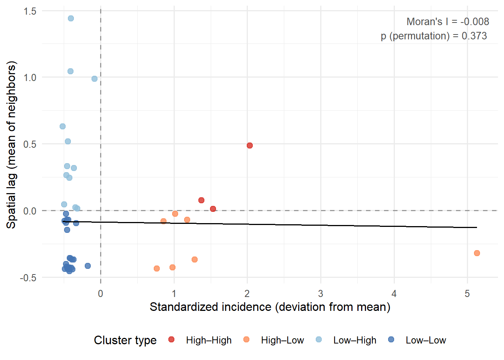

| Variable | Type | Description / Coding |
|---|---|---|
| id | numeric, nominal | Anonymized case identifier (not used in analysis) |
| sex | numeric, binary | Biological sex: 0 = Male, 1 = Female |
| age | numeric, continuous | Age at the lung biopsy/surgery date (years) |
| ethnic | numeric, nominal | Ethnic origin (presumed on the patient's name/surname and locality): 0 = Jewish, 1 = Arab, not otherwise specified (NOS), 2 = Arab, Druze, 3 = Arab, Bedouin |
| locality | character, nominal | Residential locality (city, town, or village) |
| latitude | numeric, continuous | Locality geographic latitude (decimal degrees) |
| longitude | numeric, continuous | Locality geographic longitude (decimal degrees) |
| loc_popul | numeric, continuous | Locality population size (Israeli Central Bureau of Statistics, 2023) |
| district | numeric, binary | Israeli administrative district: 0 = Haifa District, 1 = Northern District |
| smoking | numeric, binary | Smoking status: 0 = Non-smoker (never smoked or quit > 10 years before the lung biopsy/surgery date), 1 = Smoker (current smoker or quit ≤ 10 years before the lung biopsy/surgery date) |
| bx_date | numeric, continuous | The lung biopsy/surgery date |
| dx | numeric, nominal | Histological diagnosis, the LC subtype: 0 = adenocarcinoma (ACA), NOS, 1 = Mucinous ACA, 2 = Squamous cell carcinoma (SCC), 3 = neuroendocrine tumor (NET): low-grade (typical carcinoid) or intermediate-grade (atypical carcinoid) neuroendocrine neoplasm, 4 = neuroendocrine carcinoma (NEC): high-grade neuroendocrine neoplasm (small cell or large cell carcinoma) |
| pdl1 | numeric, binary | PD-L1 expression measured by tumor proportion score (TPS) - the percentage of viable tumor cells expressing PD-L1 on their surface: 0 = Weak (TPS 1–49%), 1 = Strong (TPS ≥ 50%) |
| met | numeric, binary | MET gene mutation status: 0 = no mutation, 1 = mutation detected |
| egfr | numeric, binary | EGFR gene mutation status: 0 = no mutation, 1 = mutation detected |
| braf | numeric, binary | BRAF gene mutation status: 0 = no mutation, 1 = mutation detected |
| kras | numeric, binary | KRAS gene mutation status: 0 = no mutation, 1 = mutation detected |
| erbb2 | numeric, binary | ERBB2 (HER2) gene mutation status: 0 = no mutation, 1 = mutation detected |
| alk | numeric, binary | ALK gene mutation status: 0 = no mutation, 1 = mutation detected |
| ros1 | numeric, binary | ROS1 gene mutation status: 0 = no mutation, 1 = mutation detected |
| ntrk | numeric, binary | NTRK1/NTRK2/NTRK3 gene mutation status: 0 = no mutation, 1 = mutation detected |
| ret | numeric, binary | RET gene mutation status: 0 = no mutation, 1 = mutation detected |
| msi | numeric, ordinal | Microsatellite instability (MSI) status of the tumor - instability of short tandem DNA repeats (microsatellites) of the tumor cells as a result of abnormal function of ≥ 1 mismatch repair genes (MLH1, PMS2, MSH2, and MSH6): 0 = microsatellite stable (MSS), 1 = low microsatellite instability (MSI-L), 2 = high microsatellite instability (MSI-H) |
| tmb | numeric, continuous | Tumor mutational burden (TMB) - number of non-inherited mutations per million tumor DNA bases |
Spatial Distribution and Molecular Characterization of Lung Cancer in a Northern Israeli Cohort
A Hospital-Based Epidemiological Study
1 Introduction
This report presents a hospital-based epidemiological analysis of lung cancer (LC) cases managed at the Lady Davis Carmel Medical Center, Haifa, Israel (2024–2025). The dataset was compiled through systematic review of anonymized electronic medical records extracted from the Ofek intra/interhospital medical informatics platform, covering 94 LC cases with complete histopathological and molecular characterization.
Two complementary objectives guided the analysis:
to characterize the spatial distribution of LC cases across the Haifa District and Northern District and evaluate whether observed geographic patterns are explained by established confounders — particularly smoking prevalence and population size
to describe the molecular and histopathological profile of the cohort and examine how biomarker distributions align with internationally reported data
2 Methods
The dataset comprised 94 anonymized LC cases extracted from the Ofek platform. After loading, variables were recoded as factors with descriptive labels to facilitate analysis and visualization. All analyses were performed in R programming language. The report was authored in Quarto to ensure full reproducibility.
Table 1 summarizes all variables included in the dataset. The variables are described according to a syntactical approach, primarily distinguishing only between numeric and character. Under this approach, the functional role of a variable (continuous, discrete count, binary flag, or categorical) is determined by its analytical use rather than by its storage type.
3 Data analysis
Rows: 94
Columns: 24
$ id <dbl> 414163, 414266, 414271, 414347, 414680, 414682, 414703, 4147…
$ sex <dbl> 1, 1, 0, 1, 1, 0, 1, 1, 1, 1, 0, 0, 1, 0, 0, 0, 0, 1, 0, 0, …
$ age <dbl> 77, 63, 72, 71, 84, 73, 64, 63, 67, 68, 73, 83, 79, 67, 58, …
$ bx_date <dttm> 2024-09-05, 2024-09-02, 2024-09-18, 2024-09-23, 2024-09-19,…
$ ethnic <dbl> 0, 1, 0, 2, 0, 0, 0, 0, 1, 0, 0, 0, 0, 0, 1, 0, 1, 0, 1, 0, …
$ locality <chr> "Haifa", "Acre", "Haifa", "Yarka", "Kiryat Bialik", "Elkosh"…
$ latitude <dbl> 32.81917, 32.92611, 32.81917, 32.93333, 32.83306, 33.03323, …
$ longitude <dbl> 34.99917, 35.08389, 34.99917, 35.18333, 35.06639, 35.32273, …
$ loc_popul <dbl> 298312, 53422, 298312, 16543, 46417, 267, 298312, 31896, 534…
$ district <dbl> 0, 1, 0, 1, 0, 1, 0, 0, 1, 1, 1, 0, 0, 1, 1, 1, 1, 1, 1, 0, …
$ smoking <dbl> 0, 1, 0, 0, 0, 0, 1, 1, 1, 0, 0, 1, 1, 1, 0, 0, 1, 1, 1, 1, …
$ dx <dbl> 2, 2, 2, 0, 0, 0, 0, 2, 0, 0, 0, 0, 2, 2, 2, 2, 0, 0, 0, 2, …
$ pdl1 <dbl> 0, 0, 0, 0, 0, 1, 1, 1, 0, 0, 1, 1, 0, 1, 0, 0, 0, 0, 0, 1, …
$ met <dbl> 0, 0, 0, 0, 1, 0, 0, 0, 0, 0, 0, 0, 0, 0, 0, 0, 0, 0, 0, 0, …
$ egfr <dbl> 0, 0, 0, 1, 0, 0, 0, 0, 0, 1, 0, 0, 0, 0, 0, 0, 0, 0, 0, 0, …
$ braf <dbl> 0, 0, 0, 0, 0, 0, 0, 0, 0, 0, 1, 0, 0, 0, 0, 0, 0, 0, 0, 0, …
$ kras <dbl> 1, 0, 0, 0, 0, 0, 1, 0, 1, 0, 0, 0, 0, 0, 0, 0, 1, 0, 0, 0, …
$ erbb2 <dbl> 0, 0, 0, 0, 0, 0, 0, 0, 0, 0, 0, 0, 0, 0, 0, 0, 0, 0, 0, 0, …
$ alk <dbl> 0, 0, 0, 0, 0, 0, 0, 0, 0, 0, 0, 0, 0, 0, 0, 0, 0, 0, 0, 0, …
$ ros1 <dbl> 0, 0, 0, 0, 0, 0, 0, 0, 0, 0, 0, 0, 0, 0, 0, 0, 0, 0, 0, 0, …
$ ntrk <dbl> 0, 0, 0, 0, 0, 0, 0, 0, 0, 0, 0, 0, 0, 0, 0, 0, 0, 0, 0, 0, …
$ ret <dbl> 0, 0, 0, 0, 0, 0, 0, 0, 0, 0, 0, 0, 0, 0, 0, 0, 0, 0, 0, 0, …
$ msi <dbl> 0, 0, 0, 0, 0, 0, 0, 0, 0, 0, 0, 0, 0, 0, 0, 0, 0, 0, 0, 0, …
$ tmb <dbl> 2.84, 17.97, 12.32, 0.95, 2.84, 12.33, 9.71, 14.20, 6.68, 4.…Rows: 94
Columns: 24
$ id <dbl> 414163, 414266, 414271, 414347, 414680, 414682, 414703, 4147…
$ sex <fct> Female, Female, Male, Female, Female, Male, Female, Female, …
$ age <dbl> 77, 63, 72, 71, 84, 73, 64, 63, 67, 68, 73, 83, 79, 67, 58, …
$ bx_date <dttm> 2024-09-05, 2024-09-02, 2024-09-18, 2024-09-23, 2024-09-19,…
$ ethnic <fct> Jewish, Arab, Jewish, Druze, Jewish, Jewish, Jewish, Jewish,…
$ locality <chr> "Haifa", "Acre", "Haifa", "Yarka", "Kiryat Bialik", "Elkosh"…
$ latitude <dbl> 32.81917, 32.92611, 32.81917, 32.93333, 32.83306, 33.03323, …
$ longitude <dbl> 34.99917, 35.08389, 34.99917, 35.18333, 35.06639, 35.32273, …
$ loc_popul <dbl> 298312, 53422, 298312, 16543, 46417, 267, 298312, 31896, 534…
$ district <fct> Haifa, Northern, Haifa, Northern, Haifa, Northern, Haifa, Ha…
$ smoking <fct> Non-smoker, Smoker, Non-smoker, Non-smoker, Non-smoker, Non-…
$ dx <fct> SCC, SCC, SCC, ACA, ACA, ACA, ACA, SCC, ACA, ACA, ACA, ACA, …
$ pdl1 <dbl> 0, 0, 0, 0, 0, 1, 1, 1, 0, 0, 1, 1, 0, 1, 0, 0, 0, 0, 0, 1, …
$ met <dbl> 0, 0, 0, 0, 1, 0, 0, 0, 0, 0, 0, 0, 0, 0, 0, 0, 0, 0, 0, 0, …
$ egfr <dbl> 0, 0, 0, 1, 0, 0, 0, 0, 0, 1, 0, 0, 0, 0, 0, 0, 0, 0, 0, 0, …
$ braf <dbl> 0, 0, 0, 0, 0, 0, 0, 0, 0, 0, 1, 0, 0, 0, 0, 0, 0, 0, 0, 0, …
$ kras <dbl> 1, 0, 0, 0, 0, 0, 1, 0, 1, 0, 0, 0, 0, 0, 0, 0, 1, 0, 0, 0, …
$ erbb2 <dbl> 0, 0, 0, 0, 0, 0, 0, 0, 0, 0, 0, 0, 0, 0, 0, 0, 0, 0, 0, 0, …
$ alk <dbl> 0, 0, 0, 0, 0, 0, 0, 0, 0, 0, 0, 0, 0, 0, 0, 0, 0, 0, 0, 0, …
$ ros1 <dbl> 0, 0, 0, 0, 0, 0, 0, 0, 0, 0, 0, 0, 0, 0, 0, 0, 0, 0, 0, 0, …
$ ntrk <dbl> 0, 0, 0, 0, 0, 0, 0, 0, 0, 0, 0, 0, 0, 0, 0, 0, 0, 0, 0, 0, …
$ ret <dbl> 0, 0, 0, 0, 0, 0, 0, 0, 0, 0, 0, 0, 0, 0, 0, 0, 0, 0, 0, 0, …
$ msi <fct> MSS, MSS, MSS, MSS, MSS, MSS, MSS, MSS, MSS, MSS, MSS, MSS, …
$ tmb <dbl> 2.84, 17.97, 12.32, 0.95, 2.84, 12.33, 9.71, 14.20, 6.68, 4.…3.1 Cohort demographics
The study cohort comprised 94 LC patients with a median age of 72 years (range: 42–91). The sex distribution was male-predominant (55.3% males, 44.7% females). Smoking status was nearly balanced: 51.1% non-smokers and 48.9% smokers. Geographically, 39.4% of patients resided in the Haifa District and 60.6% in the Northern District. The ethnic composition was predominantly Jewish (68.1%), followed by Arab (25.5%), Druze (5.3%), and Bedouin (1.1%). Full demographic characteristics are presented in Table 2 and Figure 1.
| Variable | Subgroup | N | % |
|---|---|---|---|
| Total patients | 94 | 100% | |
| Age, years: median (range) | 72 (42–91) | — | |
| Sex | Female | 42 | 44.7% |
| Male | 52 | 55.3% | |
| Smoking | Non-smoker | 48 | 51.1% |
| Smoker | 46 | 48.9% | |
| District | Haifa | 37 | 39.4% |
| Northern | 57 | 60.6% | |
| Ethnicity | Jewish | 64 | 68.1% |
| Arab | 24 | 25.5% | |
| Druze | 5 | 5.3% | |
| Bedouin | 1 | 1.1% | |
| Histology | ACA | 63 | 67% |
| SCC | 25 | 26.6% | |
| MucACA | 4 | 4.3% | |
| NEC | 2 | 2.1% |

3.2 Histological subtypes, biomarker distribution, and TMB
ACA was the predominant histological subtype, accounting for 67.0% of cases, followed by SCC (26.6%), MucACA (4.3%), and NEC (2.1%). No carcinoid tumors (NETs) were identified in this cohort.
Biomarker positivity was concentrated in ACA: EGFR, BRAF, and ROS1 alterations occurred exclusively in ACAs, while KRAS and PD-L1 positivity were also predominantly found in this subtype. SCC cases showed lower rates of PD-L1 (25.0%) and KRAS (8.7%) positivity.
Mean TMB differed across histological subtypes, ranging from 6.7 mutations/Mb in ACA to 16.1 mutations/Mb in NEC — consistent with the known hypermutated phenotype of the latter.
Biomarker distribution and mean TMB by histological subtype are shown in Figure 2.

3.3 Geographic distribution of LC cases
Cases were distributed across more than 40 localities within the Haifa District and Northern District. The largest concentration resided in the city of Haifa (18.1% of the cohort), followed by Acre (6.4%), Kiryat Ata (6.4%), and Nazareth (4.3%). The remaining cases were dispersed across smaller towns and villages, each contributing ≤3.2% of the total (Figure 3).
Histopathological composition varied between localities. Haifa cases were predominantly ACA (64.7%) with a substantial SCC fraction (35.3%). Acre cases split evenly between ACA and SCC, while Nazareth showed a more mixed profile including ACA, SCC, and NEC.
The bubble map (Figure 4) provides a geographic overview of absolute case counts. The city of Haifa emerges as the dominant cluster, with additional concentrations along the coastal plain (Acre, Nahariyya, Kiryat Ata) and in inland centers (Nazareth, Nof HaGalil, Afula). However, absolute case counts reflect both underlying disease risk and population size — larger cities generate more cases simply because more people live there. Population adjustment, applied in the subsequent spatial analyses, is therefore essential before interpreting geographic patterns as evidence of differential risk.

3.4 Spatial analysis
3.4.1 Kernel density estimation (KDE)
To explore geographic heterogeneity beyond absolute counts, KDE was applied in two forms: unadjusted (weighted by absolute case counts) and population-adjusted (weighted by cases per 100,000 locality population). The two maps are shown in ?@fig-kde-maps.
The unadjusted map confirms Haifa’s dominance — a pattern driven largely by its large population rather than elevated relative risk. After population adjustment, Haifa’s prominence diminishes substantially. Instead, small inland localities emerge with elevated relative intensity, most notably Elkosh (1 case in a population of 267, yielding 374.5 per 100,000). The adjusted map thus provides a more valid basis for assessing spatial risk gradients than raw case counts alone.
3.4.2 Global spatial autocorrelation
Global spatial autocorrelation was assessed using Moran’s I with a k = 4 nearest-neighbor weights matrix. The result was Moran’s I = −0.008 (permutation test p = 0.373), indicating no statistically significant global clustering of LC incidence across localities (Figure 7). This finding is consistent with the overall conclusion that apparent geographic gradients in crude case maps are attributable to population size and confounding rather than true spatial clustering of risk.
3.4.3 Local indicators of spatial association
LISA analysis identified three statistically significant localities (p < 0.05), all classified as Low–High outliers: Beitegen, Fassuta, and Kiryat Shmona — localities with relatively low incidence surrounded by higher-incidence neighbors (Figure 8, Table 3). No High–High hotspots or High–Low outliers reached statistical significance, corroborating the global Moran’s I result.

LISA analysis identified three statistically significant Low–High outliers (p < 0.05): Beitegen, Fassuta, and Kiryat Shmona — localities with relatively low incidence surrounded by higher-incidence neighbors (Table 3). No High–High hotspots or High–Low outliers reached statistical significance. This absence of significant local clustering corroborates the global Moran’s I result (I = −0.008, p = 0.373) and is consistent with the conclusion that apparent geographic gradients in crude case maps are attributable to population size distribution and smoking prevalence rather than true spatial clustering of risk.
| Locality | Population | Cases (n) | Incidence (per 100,000) | Local Moran's I | p-value | Cluster type |
|---|---|---|---|---|---|---|
| Beitegen | 12287 | 1 | 8.1 | -0.433 | 0.049 | Low–High outlier |
| Fassuta | 3387 | 1 | 29.5 | -0.085 | 0.046 | Low–High outlier |
| Kiryat Shmona | 24254 | 2 | 8.2 | -0.596 | 0.003 | Low–High outlier |
3.4.4 Smoking as a confounder
To evaluate whether the observed spatial patterns could be explained by smoking prevalence, the population-adjusted distribution of smoker cases was mapped (Figure 9) and stratified Moran’s I analyses were performed. Among smokers only, Moran’s I was 0.026 (p = 0.725); among non-smokers only, Moran’s I was −0.032 (p = 0.626) — neither significant. The statistically significant clustering observed in the combined unadjusted dataset thus disappeared once smoking status was accounted for, identifying smoking as a true spatial confounder rather than an independent geographic risk factor.
3.4.5 Ethnicity as a potential determinant
The cohort comprised four ethnic groups: Jewish (68.1%), Arab (25.5%), Druze (5.3%), and Bedouin (1.1%). Smoking prevalence among Jewish and Arab cases was similar at 53.1% and 50.0%, respectively; no smokers were recorded among Druze or Bedouin cases (Table 4). Fisher’s exact test comparing smoking prevalence between Jewish and Arab cases yielded p = 0.815, indicating no statistically significant difference. Druze and Bedouin cases were excluded from formal testing due to zero observed smokers in both groups.
These findings indicate that ethnicity does not independently explain the geographic distribution of LC cases in this cohort. Its role is more likely indirect, mediated through residential settlement patterns and their overlap with smoking prevalence.
The population-adjusted distribution of smoker cases shows partial geographic overlap with LC incidence (?@fig-kde-maps), particularly in the coastal corridor and central inland zone. However, the correspondence is imperfect — consistent with the Moran’s I stratified analysis, which showed no significant spatial autocorrelation among smokers or non-smokers when examined separately. Together, these findings suggest that smoking shapes the overall geographic distribution of LC cases but does not fully explain it at the local level.
| Ethnicity | Cases | % of total cases | Smokers | % of smokers among the cases (%) |
|---|---|---|---|---|
| Jewish | 64 | 68.1 | 34 | 53.1 |
| Arab | 24 | 25.5 | 12 | 50.0 |
| Druze | 5 | 5.3 | 0 | 0.0 |
| Bedouin | 1 | 1.1 | 0 | 0.0 |
smoking
ethnic Non-smoker Smoker
Jewish 30 34
Arab 12 12
Druze 0 0
Bedouin 0 0
Fisher's Exact Test for Count Data
data: ct
p-value = 0.8151
alternative hypothesis: two.sidedFisher’s exact test comparing smoking prevalence between Jewish and Arab cases yielded p = 0.815, indicating no statistically significant difference. Druze and Bedouin cases were excluded from formal testing due to zero observed smokers in both groups — a finding that may reflect cultural norms, small subgroup size, or referral patterns rather than true population prevalence. Together, these results suggest that ethnicity does not independently explain the geographic distribution of LC cases in this cohort; its role is more likely indirect, mediated through residential settlement patterns and their overlap with smoking prevalence.
4 Discussion
This analysis of 94 LC cases from the Lady Davis Carmel Medical Center demonstrates both the potential and the inherent limitations of hospital-based spatial epidemiology. The molecular and histopathological findings align closely with internationally reported patterns: ACA was the dominant subtype, EGFR and KRAS were the most frequent actionable alterations, and PD-L1 positivity was concentrated in ACAs — consistent with current global literature on non-small-cell LC molecular profiling.
The spatial analyses tell a methodologically instructive story. Crude case mapping initially suggested geographic clustering centered on the city of Haifa and coastal urban centers. However, successive analytical steps overturned this impression: population adjustment redistributed apparent risk toward smaller inland localities; global Moran’s I confirmed the absence of statistically significant spatial autocorrelation; and LISA identified only three Low–High outliers, with no true hotspots. Most critically, stratified Moran’s I analyses demonstrated that the modest clustering signal in the unadjusted data dissolved entirely once smoking status was accounted for — identifying smoking as the primary spatial confounder.
These findings underscore a fundamental principle of spatial epidemiology: apparent geographic clusters of disease cannot be interpreted at face value. Rigorous adjustment for population denominators and behavioral confounders is essential before attributing geographic gradients to environmental or other structural causes.
4.1 Limitations
Several limitations constrain the interpretation of these findings.
First, the dataset is hospital-based and subject to referral bias — patients residing closer to Carmel Medical Center are overrepresented, which may inflate apparent case density in the Haifa metropolitan area.
Second, the sample size of 94 cases limits statistical power for detecting subtle spatial patterns or subgroup differences.
Third, smoking history was recorded as a binary variable, precluding dose-response analysis.
Fourth, ethnic origin was approximated from patient names and residential locality rather than confirmed by self-report, introducing potential misclassification.
Finally, individual-level environmental exposure data were not available, preventing a formal assessment of gene-environment interactions — the original motivation for this study design.
Future investigations combining population-based cancer registry data, individual-level exposure measurements, and larger molecularly characterized cohorts would be needed to address these limitations and draw causal conclusions.
5 Conclusions
This analysis demonstrates that apparent geographic clustering of LC cases in Northern Israel, when subjected to rigorous spatial analysis, is explained by the uneven distribution of smoking prevalence and population size across localities rather than by independent environmental or structural risk factors. Global Moran’s I showed no significant spatial autocorrelation (I = −0.008, p = 0.373), and LISA identified only three Low–High outliers — no true hotspots. Stratified analysis confirmed smoking as the primary spatial confounder.
At the molecular level, the cohort mirrors internationally reported patterns: ACA was the dominant histological subtype, EGFR and KRAS were the most frequently altered actionable drivers, and PD-L1 positivity was concentrated in ACAs. These findings support the continued integration of comprehensive molecular profiling into routine LC diagnostics.
The principal methodological contribution of this work is the demonstration that sequential adjustment — for population denominators, referral bias, and behavioral confounders — can overturn superficially compelling geographic patterns. This principle applies broadly in spatial epidemiology and is of particular relevance in hospital-based studies with limited catchment area coverage.
Future work should prioritize population-based cohort designs, individual-level environmental exposure measurements, and extended molecular datasets to enable formal assessment of gene-environment interactions in lung carcinogenesis.